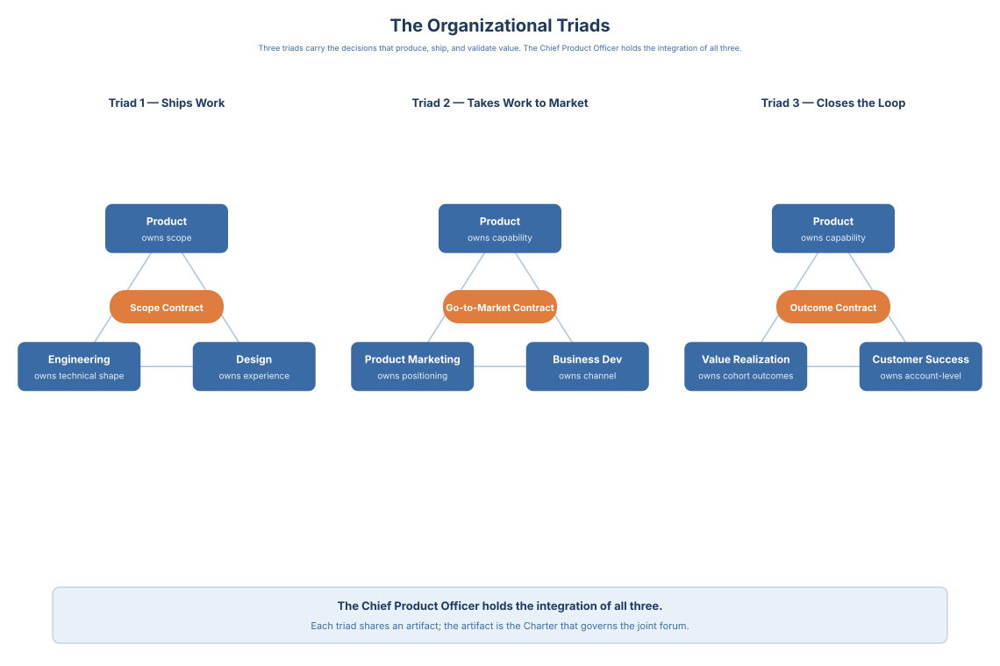
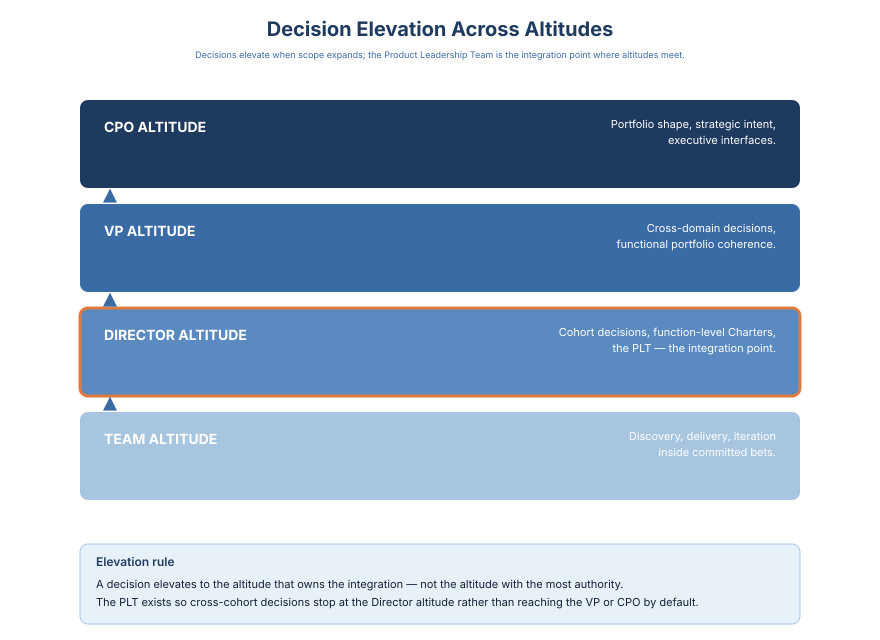

Vision to Value · 6 / 16
Chapter 4: Decision Interfaces and the Architecture
A roster answers who sits in the product organization. This chapter answers how decisions move through the seats that roster names. Scope, altitude, and accountability are settled; what remains is the machine, and the machine is a set of decision interfaces governed by a single altitude-agnostic template.
The Decision Interface Charter is that template. It names a decision, names the owner, names the counterparties, defines the cadence, and defines the escalation. A Director running a platform intake Charter with peer Directors runs the same discipline a CPO runs with C-suite peers on a portfolio commitment. The stakes, the counterparty roster, and the cadence intensity change with altitude. The shape of the machine does not.
This chapter walks the Charter template, the three decisions engineering owns, the organizational triad, and the escalation discipline that keeps a decision in the room it was designed for.
Three Decisions Engineering Owns
Chapter 3 describes the commitments Product makes. This section describes the commitments Engineering owns, which the charter discipline relies on Product respecting. There are three classes of decision that belong entirely to the CTO and the engineering organization, and Product's job is to surface the empowerment inputs, read the outputs, and refuse to absorb the decision itself.
Class 1: Architecture-review gates on committed bets. Once a bet is committed and the roadmap has named the capability, the architecture-review gate that governs the capability's technical shape is the CTO's forum. Product provides the empowerment inputs (customer-evidence for why the capability is scoped as it is, portfolio-fit for why the capability matters at this moment, continuation-threshold for when the bet would reopen). Engineering owns the gate. A Product organization that reopens architecture review as a roadmap conversation is absorbing elaboration back into scope; this is the failure mode this chapter exists to prevent. The charter instantiation: architecture-review gate fails, bet reopens under the CPO-CTO interface; architecture-review gate passes, Product does not inspect.
Class 2: Technical-debt retirement sequencing. Retirement debt is a strategic bet (see Chapter 2). Which debt to retire first, in what order, across what time horizon, is an Engineering-owned decision within the envelope the CPO-CTO interface agrees. Product provides the bet-fit input (which debt class threatens which committed bet); Engineering owns the sequencing. A Product organization that renegotiates retirement sequencing to accelerate a specific roadmap item is absorbing the Engineering decision into Product's scope-management authority, which inflates the capital envelope and delegitimizes the interface.
Class 3: Platform-versus-product investment balance within the platform envelope. The CPO-CTO interface sets the platform envelope jointly; how much of the envelope goes to which platform component, against which engineering-organization health metric (velocity, reliability, onboarding time, incident-rate), is an Engineering-owned decision. Product reads the output as an input to portfolio-risk assessment; Product does not reopen the internal allocation. A Product organization that inspects platform-component allocation is reproducing the Tier 3 reach-down the Introduction names.
The symmetry matters: Product commits under this chapter's discipline; Engineering owns these three classes under its own. The charter discipline only works if both sides refuse to absorb the other's decision territory. The CPO-CTO interface (Chapter 7) is where the boundaries get negotiated; these three classes are the boundaries that hold. The Engineering Charter in Appendix C is the seat-authored instance where all three classes land as one standing decision surface.
The Organizational Triad

There are three organizational triads that matter at executive altitude, and each triad has a named owner on the Product side, a named counterpart on the cross-functional side, and a named shared artifact.
Triad 1: Product, Engineering, Design. This is the triad that ships work. Product owns the scope, Engineering owns the technical shape, Design owns the user-facing coherence. The shared artifact is the feature-spec record plus the design-system instantiation the feature carries. The pathology at scale: Design gets absorbed into Engineering as "UI layer" and the design system degrades. The correction is the CPO-CTO-Dir Design joint forum, on the same cadence as the CPO-CTO interface, where design-system evolution and engineering-architecture evolution are read as a single conversation. The Design Charter in Appendix C is the Dir-Design-authored instance that anchors this forum; it is what keeps Design from drifting downstream.
Triad 2: Product, PMM, Business Development. This is the triad that takes work to market. Product owns the scope, PMM owns the positioning, Business Development owns the partnership architecture. The shared artifact is the Launch Narrative Brief (see Appendix B) plus the partner-motion record. The pathology at scale: PMM gets absorbed into Marketing as "campaign execution," and Business Development drifts into Sales-with-longer-cycles. The correction is the CPO-CMO-CRO joint forum, quarterly, where the three motions are read against the portfolio shape.
Triad 3: Product, Value Realization, CS. This is the triad that closes the loop from shipped work to customer outcome. Product owns the capability, Value Realization owns the outcome measurement, CS owns the account-level health. The shared artifact is the customer-outcome record plus the health-score instrumentation. The pathology at scale: Value Realization gets absorbed into Product Operations as "adoption dashboard," and CS drifts into "support-with-renewal-responsibility." The correction is the CPO-COO-CCO forum, quarterly, where customer-outcome evidence becomes an input class to the portfolio review. The Customer-Outcome Charter in Appendix C, co-authored by Dir CS and the Value Realization lead, is the standing instance that threads T+6 and T+12 cohort reads back to each bet's Business-Case artifact.
Three triads. Three shared artifacts. Three joint forums. Each has a failure mode preceding chapters describe in different forms, and a correction the CPO-CTO, CPO-CMO-CRO, and CPO-COO-CCO interfaces carry. The triads are the organizational shape; the interfaces are how the shape runs. Without the triads named, the shape drifts; without the interfaces running, the triads cannot hold.
The Five Signals of a Committed Bet
- Capital envelope named with committed floor, envelope, and disclosure threshold
- Continuation threshold named with evidence class, amount, and date
- Re-decision triggers named (outcome, market, counterparty-specific)
- Record location and auditable-by named
- Exit condition named (commit, cancel, migrate)
A committed bet is a bet that carries all five signals on the record. A bet missing any signal is a bet that cannot be reopened with discipline, and will instead be reopened on political cost. Threshold-anchor calibration guidance and worked examples that instantiate each signal are specified in Appendix B → Business-Case / Continuation-Threshold Template.

The Emotional Cost. The first time I refused a commitment the company wanted and accepted a commitment the company would resent delivering, I learned what this chapter actually asks of the product leader. The refused commitment cost us a named deal that quarter. The accepted commitment cost two quarters of friction with functions who did not design it and now had to carry it. Both decisions were right. Neither was popular. The discipline is expensive at the altitude only the product leader operates at, and the alternative — committing loosely, shipping ambiguously, absorbing the drift — is more expensive at every altitude below.
Vision to Value Toolkit (Chapter 4)
Purpose: assess whether your structure accelerates or constrains decision quality, learning speed, and accountability at scale. This toolkit is about structural leverage, not org charts.
Decision Ownership Audit
List five recent high-impact product decisions.
For each, ask:
- Who was explicitly accountable?
- Who contributed input?
- Where was the decision actually made?
- Did ownership match role design?
Signal of maturity:
The accountable owner is obvious without explanation.
Decision Latency Mapping
Identify decisions that took longer than expected or required escalation.
Ask:
- Was ownership unclear?
- Were too many roles involved?
- Was authority missing at the level closest to the work?
Latency reveals structural issues, not people issues.
Role-to-Decision Fit
For each core role, list:
- Decisions it should own
- Decisions it should influence
- Decisions it should not make
Look for overreach or decision avoidance.
Leadership Elevation Discipline
Review escalated decisions from the last quarter.
Ask:
- Which should have stayed lower?
- Which truly required leadership involvement?
- Were escalation criteria explicit?
Structural Drift Scan
Reflect on the last strategic shift.
Ask:
- Did roles change accordingly?
- Were decision boundaries revisited?
- Or did teams continue operating under old assumptions?
Product and Engineering Boundary Health
Evaluate:
- Is intent clearly owned by Product?
- Is solution design clearly owned by Engineering?
- Is accountability clear when priorities conflict?
Healthy tension is productive. Blurred ownership is not.
Mid-Layer Leverage Test
Assess directors or group-level leaders.
Ask:
- Are they resolving tradeoffs or aggregating status?
- Are they adding clarity or friction?
Structural Redesign Prompt
Choose one recurring structural pain point.
Write:
- The decision it should enable
- The role that should own it
- The structural obstacle today
Redesign the role or boundary explicitly around that decision.
What you will likely find: on the Role-to-Decision Fit audit, two or three roles appear in the "influences" column for decisions where nobody is in the "owns" column. "Influences" is the word the organization uses when a decision has no owner and the organization is uncomfortable saying so. The cost lands every month: the decision surfaces, circulates through the influencers, returns unresolved, and arrives in your inbox as an escalation. Count the decisions in that pattern. Each one is an escalation per month that your role exists specifically to prevent.
The Charter can take one structural addition for AI-mediated decision surfaces. Any decision that depends on agent output can carry an evaluation-set contract, a named owner, a version, and an audit cadence at peer altitude with the assumption ledger and the metric-integrity contract. The provenance line on the record can name the inputs the agent contributed, the inputs the seat owner revised, and the seat owner who closed the Call. The test is plain. Name your Charter's three re-decision triggers without looking at the document. The leader who can name them owns the interface. The leader who cannot has a Charter the agent drafted and a seat the system has not yet ratified.
The Charter template holds at every altitude; Chapter 5 turns to what altitude itself changes — the peer counts that widen as you climb down, the interfaces that break first as the organization scales, and the leadership work that grows heavier at the altitudes the book might appear to address least.